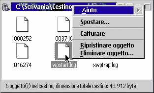

La maggior parte degli utenti sarÖ probabilmente abituata a questa funzione, offerta da MacOS, Windows 95 e KDE (su Linux). In sostanza il cestino immagazzina temporaneamente gli oggetti cancellati dal sistema, cosç da poterli recuperare, nel caso li si siano cancellati erroneamente, semplicemente aprendo il cestino (che funziona come una normale cartella) e ripristinandoli.
Con &xwp;, il cestino intercetta tutte le operazioni di cancellazione WPS (non
intercetta perï le operazioni da linea di comando nÇ l'impostazione DELDIR di &os2;.).
Nota: il cestino non viene creato automaticamente durante l'installazione, e il supporto alla cancellazione del cestino ä inizialmente disabilitato per evitare confusione. PerchÇ il cestino venga attivato lo si deve abilitare dalla pagina "Funzioni", nell'oggetto "Impostazione di &xwp;".
Per cancellare un oggetto spostandolo nel cestino vi sono due maniere:
‘ sempre possibile effettuare una cancellazione reale (effettiva cancellazione dell'oggetto invece di suo spostamento nel cestino) tenendo premuto il tasto "Maiusc" mentre si seleziona la voce "Cancella" dal menu contestuale dell'oggetto.

Inoltre, quando nel cestino vi ä qualcosa, nel menu contestuale del cestino appare una voce aggiuntiva "Svuota cestino", che serve a cancellare tutti gli oggetti presenti nel cestino.
Il cestino ha una nuova pagina di impostazioni nel suo blocco impostazioni, contenente funzioni aggiuntive. Selezionare "Aiuto" da quella pagina per maggiori informazioni.
Per maggiori dettagli sul funzionamento interno del cestino consultare
la relativa pagina nella sezione
"Caratteristiche interne di &xwp;".